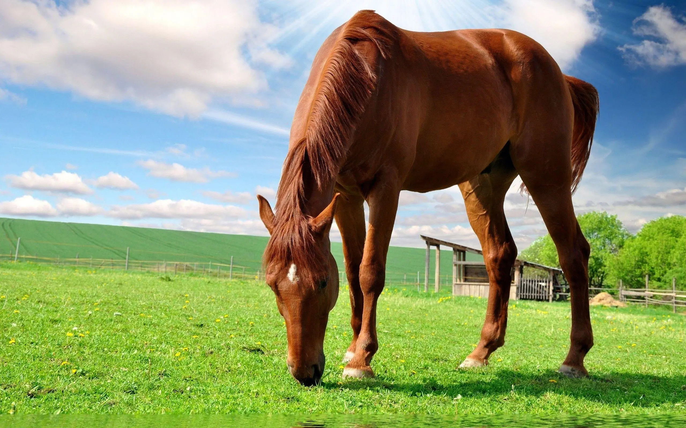

Pferde
Das Hauspferd (Equus caballus) ist ein weit verbreitetes Haus- bzw. Nutztier, das heute in zahlreichen Rassen auf der ganzen Welt existiert.
Das Hauspferd ist die domestizierte Form des Wildpferdes, das mit den Eseln und Zebras die Familie der Pferde (Einhufer, Equidae) innerhalb der Ordnung der Unpaarhufer (Perissodactyla) bildet.
Bild herunterladen